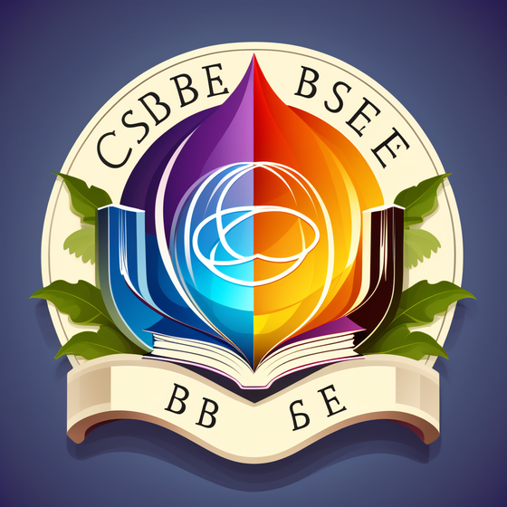
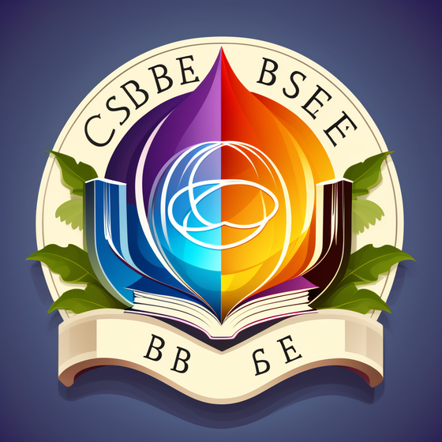
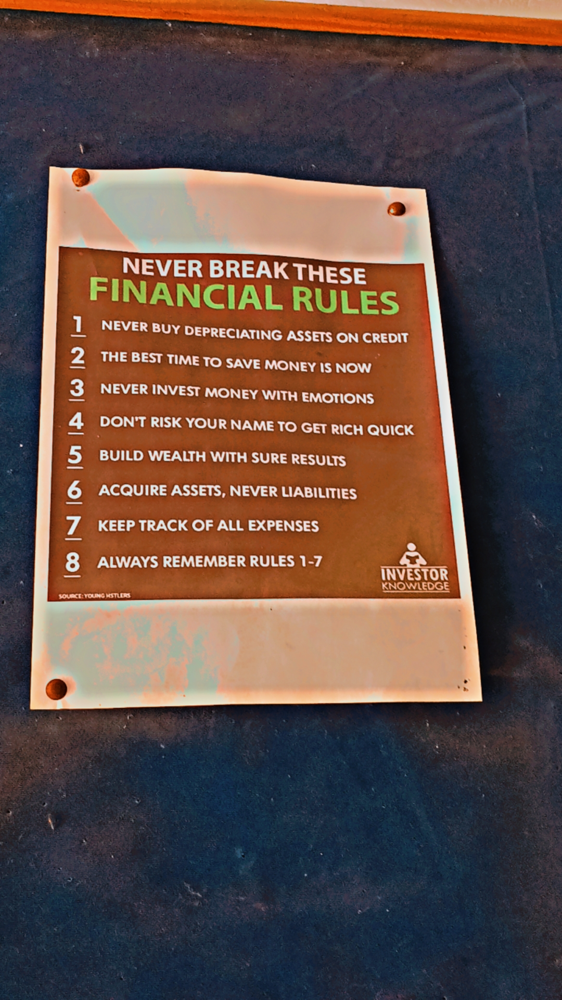

.png)
We make Python, C++ and HTML — webpage to learn these Language eaily and to show My skills of web devlopement.
Greetings! I'm Bhavy Sharma, a passionate student at CCSU University, and I'm thrilled to welcome you to my digital space. Here, you'll get to know more about my journey as a tech enthusiast and a budding professional in the world of web development and programming.
Making webpage isn’t easy. It takes time, effort, and learning. But when you’re in the flow, it’s incredibly rewarding.
As a web developer, my journey has been marked by a relentless pursuit of creativity and technical excellence. Harnessing the skills acquired through my education at CCSU University, I've delved into the intricate world of web development, transforming concepts into dynamic and visually compelling digital landscapes. Armed with proficiency in HTML, CSS, Python, C, and C++, I embark on the challenge of crafting seamless user experiences and intuitive interfaces. Beyond the code, my creative flair extends to video editing and thumbnail creation, adding an aesthetic touch to the digital realm.
My History till Present
I hail from a middle-class family and started my educational journey at the Senior Activity School in Hansi for my secondary education. The foundation laid there ignited my curiosity and passion for learning. For my senior secondary education, I moved to the prestigious Govt. Modal Sanskriti Senior Secondary School in Hansi. It was during these formative years that I delved deeper into my academic pursuits, achieving an impressive 98% in my 10th class and 83% in my 12th class. These academic accomplishments not only reflect my dedication but also the support and encouragement from my family and teachers.

 

Got an Excellence Certificate in Coding
In the realm of coding, I participated in a GitHub competition, where I earned an Excellence Certificate. This recognition not only boosted my confidence but also fueled my enthusiasm for coding and technology.

Leadership and Volunteering an NSS Camp
Education is not just about grades; it's also about holistic development. I had the privilege of serving as a leader in the National Service Scheme (NSS), where I led a group of 50 dedicated volunteers during a camp. This experience not only honed my leadership skills but also instilled a sense of social responsibility.
What I Do: As a - Web Developer
As a web developer, my journey has been marked by a relentless pursuit of creativity and technical excellence. Harnessing the skills acquired through my education at CCSU University, I've delved into the intricate world of web development, transforming concepts into dynamic and visually compelling digital landscapes. Armed with proficiency in HTML, CSS, Python, C, and C++, I embark on the challenge of crafting seamless user experiences and intuitive interfaces. Beyond the code, my creative flair extends to video editing and thumbnail creation, adding an aesthetic touch to the digital realm. One of my notable achievements includes participation in a GitHub competition, where I earned an Excellence Certificate in coding. This recognition not only validated my coding prowess but also fueled my commitment to mastering the art of programming. Throughout my educational journey, I've maintained an academic record reflective of my dedication, securing an impressive 98% in 10th grade and 83% in 12th grade. In essence, my identity as a web developer is characterized by a blend of technical prowess, creative ingenuity, and a commitment to making a positive impact. As I continue to evolve in this dynamic field, I eagerly anticipate the challenges and opportunities that lie ahead, always striving to push the boundaries of what is possible in the digital realm.
